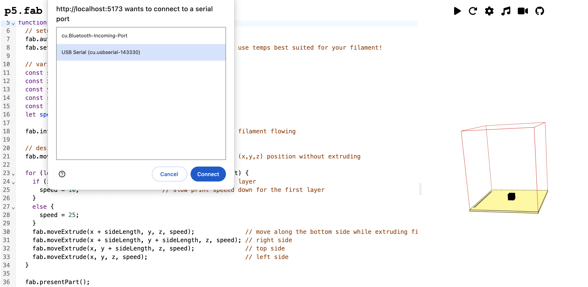

Getting Started #
I recommend using the online editor to get started. It lets you to write code, start/stop prints, connect to MIDI devices, and connect to a camera in one place.
Step 0: Gather materials #
You’ll need:
- A 3D printer + filament
- Google Chrome browser
- a USB cable to connect your computer to your printer
Step 1: The online editor #
Using Chrome, open the online editor. (We have to use Chrome because it’s the only browser that supports WebSerial). It should look something like this:

The left side is a code editor, the right side shows a simple preview of your object. There are various menu items at the top:
- : Open a blank code template
- : Download the current code
- : Upload a js file
- : Open an example
- : Run the current code; this will not interrupt your machine connection
- : Restart the sketch; this will interrupt the machine connection
- : Toggle the machine info pane
- : Toggle the midi info pane
- : Toggle the video info pane
Try changing the sideLength variable on line 11 to a new number, then press (or Shift+Enter):
You’ll see the code flash orange (indicating that you ran the code) and the preview update accordingly.
Step 2: Add some code #
Open a blank template with the button. You’ll see five default functions:
function setup() {
createCanvas(windowWidth, windowHeight, WEBGL);
}
function fabDraw() {
}
function midiSetup() {
}
function midiDraw(moveCommand) {
return moveCommand;
}
function draw() {
background(255);
fab.render();
}The setup() and draw() functions are from p5.js (see the p5 reference for more info). The midiSetup() and midiDraw() functions can be used to setup interactive modifications for prints. In the fabDraw() function, we’ll write code to define our toolpaths.
The fab object is created automatically and represents your machine. Add the following line to auto home:
function fabDraw() {
fab.autoHome();
}Run the code (Shift+Enter); you won’t see the preview change, since there’s no filament being laid down. You can find other commands in the reference.
Step 3: Connect + run #
Connect your computer to your printer using a USB cable. Open the machine pane and press connect. You’ll be prompted to choose a device:
Choose the USB serial device (if there are multiple and you’re not sure which one is the printer, try unplugging/replugging the cable and see which one reappears). The connection status in the machine pane should now say ‘connected’.
Press start print in the machine pane, and the machine should home. Hooray!
Step 4: Print a line #
To print, we need to heat up the nozzle. We can set the nozzle and bed temperatures with setTemps(<nozzleTemp>, <bedTemp>). To get filament flowing, we can use introLine() to draw purge lines on the left side of the bed. Then you can make absolute or relative moves as we’d like, e.g.:
function fabDraw() {
fab.autoHome();
fab.setTemps(205, 60);
// .2 mm is a reasonable first layer height for a .4mm nozzle
// change this as needed!
const printHeight = 0.2;
fab.introLine(printHeight);
fab.moveRetract(50, 50, printHeight);
fab.extrudeX(100);
}You can find other commands in the reference. Run the code to preview (Shift+Enter), then press start print to print your line :).